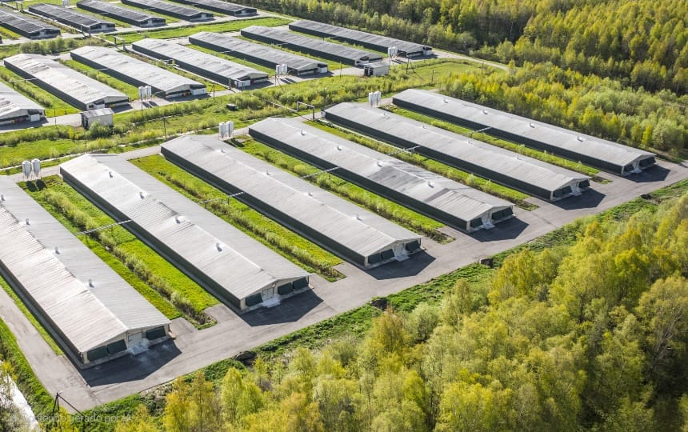
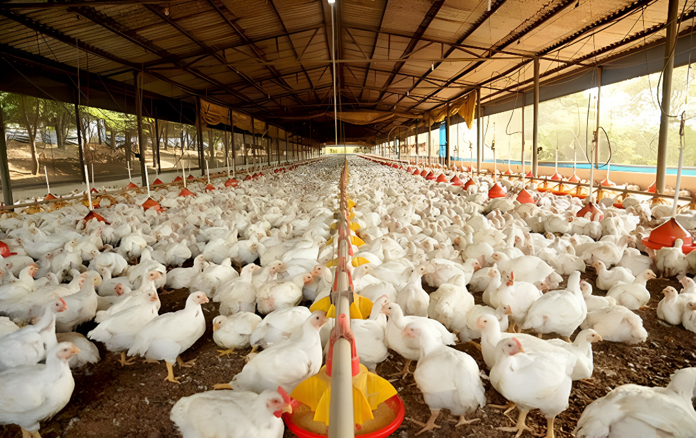
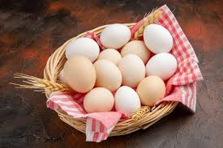
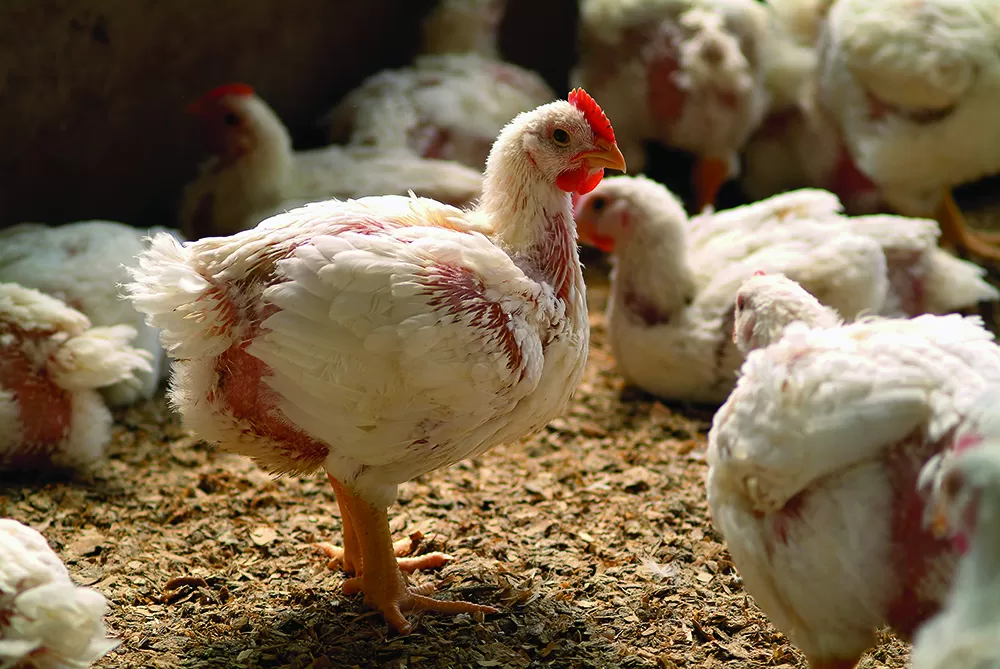
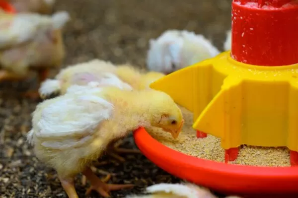

Desde 2010, dedicamo-nos à criação ética e sustentável de galinhas poedeiras e frangos de corte. Nossas aves vivem em harmonia com a natureza, produzindo ovos orgânicos e carnes frescas de qualidade superior. Venha conhecer nossa paixão pela avicultura responsável!
Descubra Nossos ProdutosA Granja Galinhas Douradas foi fundada em 2010 por uma família apaixonada por aves e pela vida rural. Localizada no coração do interior de São Paulo, nossa propriedade de 50 hectares é dedicada exclusivamente à criação de galinhas em sistema semi-intensivo, permitindo que as aves se movimentem livremente e expressem comportamentos naturais.
Com mais de uma década de experiência, investimos em tecnologias modernas de manejo sanitário e nutrição balanceada, garantindo a saúde das nossas galinhas e a pureza dos produtos. Somos certificados como produtores orgânicos pelo IBD, assegurando que todos os nossos itens sejam livres de agrotóxicos, hormônios e antibióticos desnecessários.
Nossa missão é fornecer alimentos saudáveis para as mesas brasileiras, promovendo o bem-estar animal e a preservação ambiental. Junte-se a nós nessa jornada rumo a uma avicultura mais ética e sustentável!


Oferecemos uma variedade de produtos colhidos diariamente, com foco na qualidade e no sabor autêntico da criação natural.

Ovos colhidos diariamente de galinhas poedeiras criadas soltas. Ricos em ômega-3 e vitaminas, perfeitos para uma alimentação saudável. Disponíveis em dúzias de 12 ou 30 unidades.

Frangos criados por 90 dias em pastagens rotacionadas, resultando em carne tenra e saborosa. Sem hormônios, ideais para churrascos e refeições familiares. Pesos de 1,5 a 3 kg.

Alimentação balanceada à base de milho orgânico, soja e ervas. Projetada para promover o crescimento saudável e a produção de ovos de alta qualidade. Disponível em sacos de 25 kg.
Estamos ansiosos para ouvir de você! Seja para pedidos, parcerias ou dúvidas sobre nossos produtos, entre em contato.
Email: contato@galinhasdouradas.com | Telefone: (11) 1234-5678 | Endereço: Rua das Aves, 123 - Interior de SP